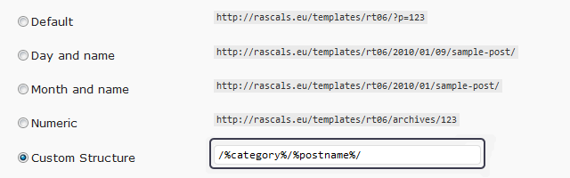
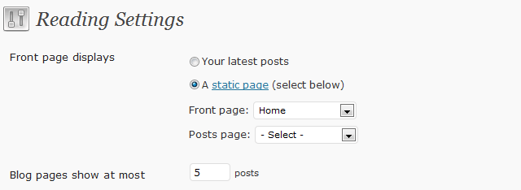

Wordpress setup
Pretty Permalinks
Permalinks are the permanent URLs to your individual weblog posts, as well as categories and other lists of weblog postings. A permalink is what another weblogger will use to link to your article (or section), or how you might send a link to your story in an e-mail message. The URL to each post should be permanent, and never change — hence permalink.
Go to -> Admin Panel -> Settings -> Permalinks  Below Common Settings tick the radio button next to Custom Settings option and enter the following:
/%category%/%postname%/
Setting the homepage
Admin Panel -> Settings -> Reading -> Front page displays -> 
check 'static page' and select below 'Front page'
Admin Panel -> Settings -> Reading -> Blog pages show at most -> enter e.g. 5